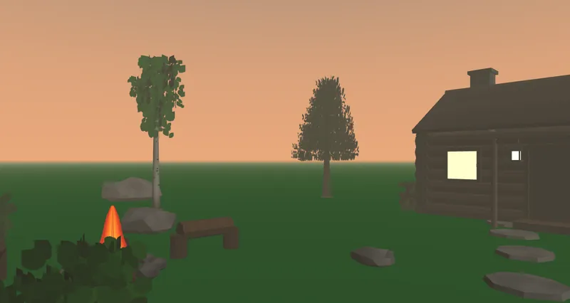

The client for worlds that are web pages.
A world is a document at a URL. WebVerse is the page that opens it: on a phone, a laptop or a headset's browser, with nothing to install. Every published world's link opens WebVerse already pointed at that world, so most people use it without ever visiting this page.
The Overlook, a world opened in WebVerse.
What it does
Opens any world by its address
and follows links from one world into another.Puts visitors in the same room
Others appear, and move, as they move.Runs a world's scripts in a sandbox
so a world can do things and cannot reach outside.Shows something walkable first
and fills in the detail while you are already there.The whole world, and the whole document
Everything the world on the left is made of is the text on the right.

<?xml version="1.0" encoding="utf-8"?>
<veml xmlns="http://www.fivesqd.com/schemas/veml/4.0"
xmlns:env="http://www.fivesqd.com/schemas/veml/4.0/profiles/environment"
version="4.0">
<metadata>
<title>Living Room</title>
<profile>lighting</profile>
<profile>environment</profile>
</metadata>
<environment>
<background color="#404040ff"/>
<entry-point id="default">
<position x="3" y="0.1" z="5"/>
<rotation x="0" y="0.346936" z="0" w="0.937889"/>
</entry-point>
<env:environment-map src="assets/sky.a96a6d688f.png"
intensity="9.24" diffuse="4.62" specular="0.15"
glazing-boost="10.7" glazing-f0="0.6" punctual-lights="exclude"/>
<asset tag="model" src="assets/model.9002eb17ad.glb">
<transform>
<position x="0" y="0" z="0"/>
<rotation x="0" y="0" z="0" w="1"/>
<scale x="1" y="1" z="1"/>
</transform>
</asset>
</environment>
</veml>What it is not
Not an app store, not an account, not a place worlds live. The world is files at its own address; WebVerse is how a browser shows them. A world at your own address opens whether or not this site exists.
Open source

WebVerse and the engine under it, StraightFour, are MIT-licensed. The public release of the current generation is being prepared; the earlier generation is at github.com/Five-Squared-Interactive.
Looking for the earlier WebVerse (2.1.x, the Windows build and the "Lite" viewer)? It is retired, and the worlds it listed are no longer served here. The rest of the story is at fivesqd.com.